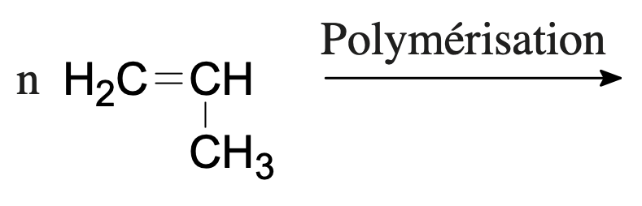
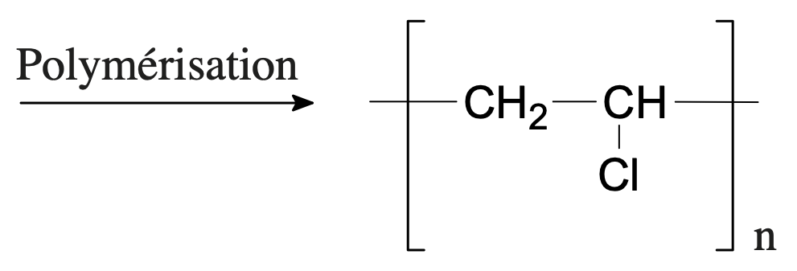
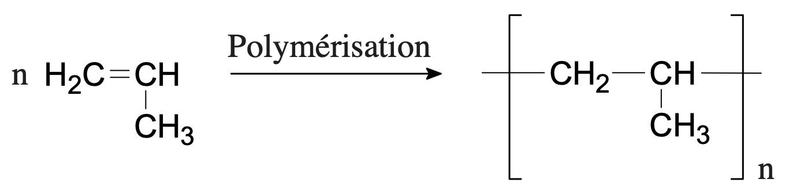
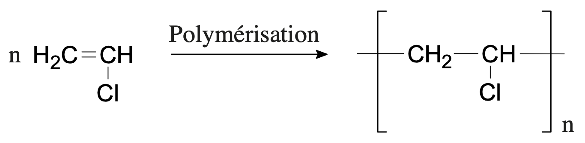
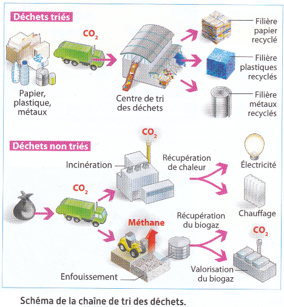
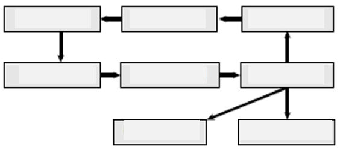
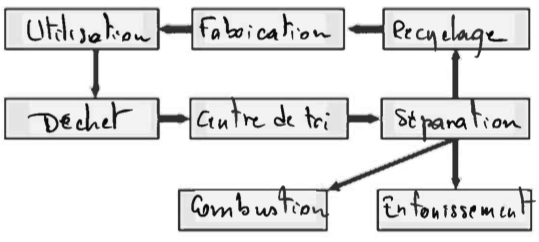
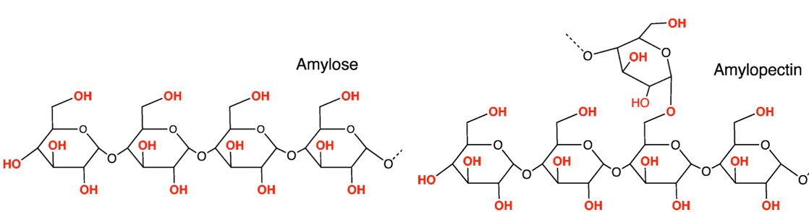

Qu’est-ce qu’une matière plastique ?
Synthèse
Les nombreuses matières plastiques que nous utilisons dans la vie courante sont constituées de molécules de longue chaîne carbonée, appelées polymères. La réaction de formation d’un polymère est nommée polymérisation. La polyaddition est un type particulier de polymérisation.
Une polyaddition est une réaction au cours de laquelle de petites molécules identiques, contenant une double liaison et appelées monomères, s’additionnent les unes aux autres, pour donner un polymère.
Exemple de la formation du polyéthylène, utilisé dans les bouchons de bouteille d’eau, à partir du monomère éthylène (ou éthène en nomenclature officielle) :

- Monomère : éthène (ou éthylène) et polymère : polyéthène (ou polyéthylène PE)
Polymères thermoplastiques, polymères thermodurcissables
Recherchés pour leurs propriétés remarquables (légèreté, longue durée de vie, isolant électrique et thermique, faible dégradabilité, grande diversité d’utilisation), on classe les plastiques en deux grandes catégories :
- Les polymères thermoplastiques se ramollissent lors de leur chauffage, leurs chaînes sont le plus souvent linéaires ;
- Les polymères thermodurcissables durcissent lors de leur chauffage, leurs chaînes sont réticulées (c’est-à-dire reliées entre elles) et forment une structure tridimensionnelle.
Un plastique très courant, utilisé dans les bouteilles d’eau, le polyéthylène téréphtalate (PET)
- Dans les exemples ci-dessous, représenter le monomère ou le polymère formé.
- Monomère : propène (ou propylène) 
- Polymère : polychlorure de vinyle 
Solution
-
Monomère : propène (ou propylène) et polymère : polypropène (ou polypropylène). 
-
Monomère : chlorure de vinyle et polymère : polychlorure de vinyle. 
- Le PET fait partie de la famille des polyesters. Le justifier. Indiquer s’il est thermoplastique ou bien thermodurcissable.
Solution
- Le motif du PET contient deux fonctions ester.
- La molécule semble présenter une certaine linéarité, c’est donc un polymère thermoplastique.
- À l’aide de vos connaissances personnelles et en analysant la structure du polyéthylène (PE) et du polyéthylène téréphtalate (PET), préciser la nature des interactions assurant la cohésion, à l’état solide, de ces deux polymères. Justifier alors que le PET se ramollit à une température supérieure à celle permettant le ramollissement du PE.
Solution
- Le PE est une molécule apolaire. La cohésion de ce plastic est due aux interactions de Van Der Waals.
- Le PET possède des atomes d’oxygène qui polarisent certaines liaisons et donnent à la molécule des moments dipolaires locaux permanents. Ces atomes d’oxygène permettent aussi au d’effectuer des liaisons hydrogène. L’énergie à fournir pour ramollir le PET est donc supérieure à celle nécessaire pour ramollir le PE.
Le défi du traitement des déchets plastiques
Le tri des déchets plastiques peut se faire de manière efficace par :
- Flottation en utilisant des notions de densité ; on donne ci-dessous la densité de quelques matières plastiques :
| Polymère | Densité |
|---|---|
| Polyéthylène haute densité (PE+HD) | 0,95 |
| Polyéthylène basse densité (PE+BD) | 0,92 |
| Poly(téréphtalate d’éthylène) (PET) | 1,30 |
| Poly(métacrylate de méthyle) (PMMA) | 1,18 |
| Polypropène (PP) | 0,91 |
| Poly(chlorure de vinyle) (PVC) | 1,38 |
- Séparation optique par, entre autres, analyse infrarouge.
Lien vidéo : http://www.directindustry.fr/prod/pellenc/product-89195-1732053.html
Valorisation et recyclage des déchets — plastiques notamment

- Vous devez séparer un bouchon de bouteille (en PE) d’une bouteille. Indiquer, par des schémas clairs, quelles méthodes vous pouvez employer, et comment les plastiques peuvent être distingués.
Solution
- 1ère méthode : méthode basée sur la différence de densité
- Une bouteille d’eau en PET possède une densité supérieure à la densité de l’eau ; elle coule donc immergée dans l’eau.
- Un bouchon en PE possède une densité inférieure à la densité de l’eau ; il flotte.
- 2ème méthode : méthode spectrale Dans une molécule de PET, il existe des laisons $\ce{C-Cl}$. Ces liaisons sont tout à fait repérables en spectroscopie IR.
- En écrivant la réaction de combustion du PVC de formule brute $\ce{C_{2n}H_{3n}Cl_n}$, qui produit notamment du chlorure d’hydrogène gazeux, montrer que l’incinération des déchets plastiques n’est pas une solution écologique pour éliminer ce polymère.
Solution
$$
\ce{C_{2n}H_{3n}Cl_n + 3n O2 –> 2n CO2 + n HCl + 2n H2O}
$$
$\ce{CO2}$ est un gaz à effet de serre et $\ce{HCl}$ est le chlorure d’hydrogène. Ce dernier se solubilise dans l’eau (solution d’acide chlorhydrique) et participe aux pluies acides.
L’incinération des déchets plastiques n’est donc pas une solution écologique pour éliminer ce polymère.
- Cycle de vie d’un plastique : Compléter le schéma suivant, en utilisant les termes proposés : « centre de tri », « combustion », « déchet », « enfouissement », « fabrication », « recyclage », « séparation », « utilisation ». 
Solution

Synthèse d’un plastique biodégradable
Amidon
Les matières premières renouvelables prennent une importance écologique croissante comme matériaux de base de synthèses chimiques. Un matériau de base renouvelable important est l'amidon. Une de ses propriétés naturelles est la possibilité de former des films. Cette caractéristique est intéressante car il est possible de l’améliorer chimiquement tout en assurant au produit formé sa biodégradabilité originelle. Le développement de films biodégradables contribue de façon considérable à la protection de l’environnement. Le but de ce TP est de synthétiser un film plastique biodégradable à base d’amidon. La préparation de ces films est très prometteuse. En effet, l’amidon est une matière première renouvelable que l’on trouve dans les plantes sous forme de grains dont la morphologie varie avec l’espèce végétale. Pour obtenir un film biodégradable, on préserve autant que possible la structure moléculaire de l’amidon, de telle sorte que la décomposition par les enzymes reste possible. L’amidon est un mélange de 2 polymères : l'amylose et l'amylopectine. 
Amélioration de la qualité du film
La plupart des amidons de maïs de pomme de terre contiennent 70 à 85 % d’amylopectine et 15 à 30 % d’amylose. La possibilité pour l’amidon de former un film est principalement due aux ponts hydrogènes entre les longues chaînes non ramifiées de molécules d’amylose. Malheureusement, la haute fragilité due à l’amylopectine empêche l’application commerciale de films d’amidon simples. Les dérivés chimiques de l’amidon et l’addition de plastifiants non toxiques (les polyols par exemple et plus particulièrement le glycérol) utilisés dans la fabrication de films permettent une meilleure résistance à la tension, ainsi qu’une flexion et une transparence satisfaisantes pour de multiples applications. Grâce à la présence de certains groupements fonctionnels (groupes hydroxyles), les films amidonnés peuvent être colorés avec des colorants alimentaires solubles à l’eau, sans dépasser les valeurs limites. Les films contenant de l’amidon, du glycérol et des colorants alimentaires sont complètement non-toxiques.
Protocole expérimental à base d’amidon et de glycérol)
- Dans un erlenmeyer de $\pu{250 mL}$, introduire :
- $\pu{2,5 g}$ d’amidon de pomme de terre,
- $\pu{2,5 mL}$ de glycérol à 50 % en volume,
- $\pu{1 mL}$ de solution de colorant (colorant alimentaire),
- $\pu{2,0 mL}$ d’acide chlorhydrique de concentration molaire $\pu{0,10 mol.L-1}$,
- environ $\pu{25 mL}$ d’eau distillée.
- Chauffer le mélange à 80 °C à l’aide d’une plaque chauffante tout en agitant, pendant 8 minutes sans qu’il yait ébullition jusqu’à la formation d’un mélange homogène ; baisser la température si besoin.
- Ajouter environ $\pu{2 ml}$ d’une solution d’hydroxyde de sodium à la concentration molaire de $\pu{0,10 mol.L-1}$ puis laisser chauffer encore 8 minutes.
- Après l’arrêt du chauffage, ajouter $\pu{2 mL}$ d’hydroxyde de sodium.
- Verser la solution sur un verre de montre.
- Placer à l’étuve à 100 °C pendant 1 heure environ.
- Décoller délicatement le film s’il est sec. Sinon, le sécher avec un sèche-cheveux placé à $\pu{10 cm}$ du film.
Notes sur la synthèse
- Le glycérol va servir de plastifiant. Autrement dit, il n’interagit pas chimiquement avec la matrice dans laquelle il est dispersé ; il permet simplement d’augmenter le volume libre entre deux chaînes de polymères pour en diminuer les interactions et ainsi favoriser le mouvement de l’une par rapport à l’autre. On passe donc d’un matériau rigide à un plastique.
- La présence de ce plastifiant permet en plus de diminuer le chauffage grâce au volume libre qu’il introduit entre les chaînes. Enfin, l’ajout de glycérol rend le film plastique transparent, ce qui est bien pratique notamment dans le domaine de l’emballage.
- L’acide chlorhydrique sert à favoriser la destructuration du grain d’amidon par un phénomène d’hydrolyse ménagée. On favorise alors la séparation amylose/amylopectine et le passage de l’amylose en solution. Un amidon déstructuré est tout simplement un amidon qui ne se trouve plus sous sa forme originelle de grain : les polymères le constituant (amylose et amylopectine) sont dispersés mais chimiquement, il n’y a aucune différence (les chaînes de glucose sont juste un peu plus courtes à cause de l’acide).
- Le chauffage sert lui aussi à destructurer l’amidon. Une fois destructuré, l’amidon mélangé au glycérol peut être mis en forme.
- Le glycérol est en fait le propan-1,2,3-triol. Donner sa formule semi-développée.
Solution
$$ \ce{HO-CH2-CH(OH)-CH2-OH} $$
-
Réaliser les manipulations afin d’obtenir le film plastique en respectant les consignes de sécurité.
-
Expliquer la phrase en s’aidant d’un schéma: « La possibilité pour l’amidon de former un film est principalement due aux ponts hydrogènes entre les longues chaînes non ramifiées 1e molécules d’amylose ».
-
Quelles propriétés la molécule de glycérol apporte-t-elle au film plastique ?
Solution
Le glycérol va servir de plastifiant. Autrement dit, il n’interagit pas chimiquement avec la matrice dans laquelle il est dispersé ; il permet simplement d’augmenter le volume libre entre deux chaînes de polymères pour en diminuer les interactions et ainsi favoriser le mouvement de l’une par rapport à l’autre. On passe donc d’un matériau rigide à un plastique.